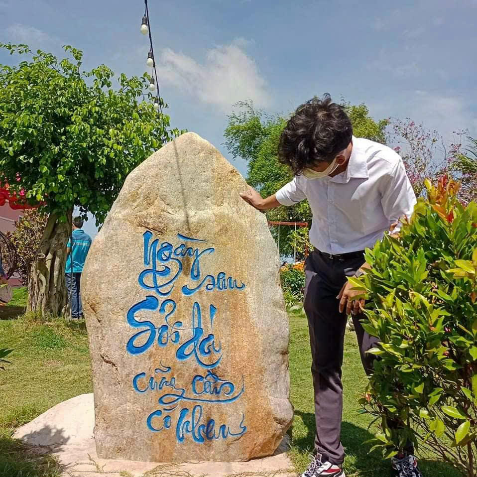

Vị trí ứng tuyển: Kỹ Thuật Viên
Tốt nghiệp ngành Khoa học Máy tính, đã hoàn thành chương trình thực tập tại doanh nghiệp. Có định hướng phát triển chuyên sâu về mảng kỹ thuật phần cứng laptop, xử lý sự cố thiết bị và quản trị hạ tầng hệ thống. Đã có kinh nghiệm thực tế trong việc chẩn đoán lỗi, thay thế linh kiện và bảo trì phần cứng. Mong muốn tìm kiếm cơ hội làm việc chính thức ở vị trí Kỹ thuật viên.
Mục tiêu & Công nghệ: Cấu hình CentOS Stream 9, triển khai Apache + PHP + MySQL, cấu hình Virtual Host và tường lửa.
Mục tiêu & Công nghệ: Tự động hóa quy trình vận hành ứng dụng bằng Docker, K8s, Jenkins và ArgoCD.
Mục tiêu & Công nghệ: Sử dụng Bash Scripting và Ansible để cấu hình tập trung và quản lý vòng đời thiết bị tự động qua mạng.
Mục tiêu & Công nghệ: Ứng dụng Web FastAPI ghi nhận thiết bị, tích hợp huấn luyện mô hình ML/AI nhận dạng thiết bị hư hỏng và triển khai qua CI/CD.